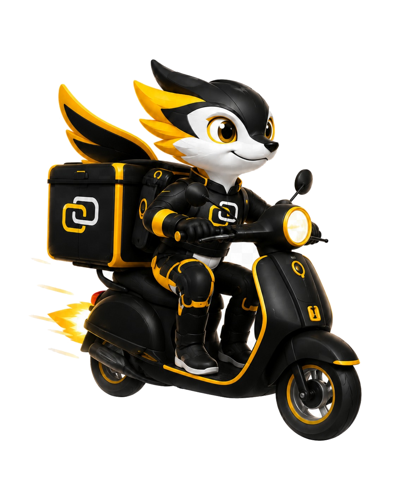
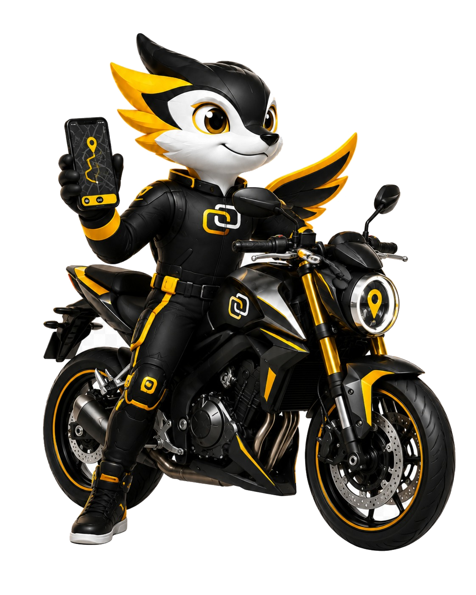
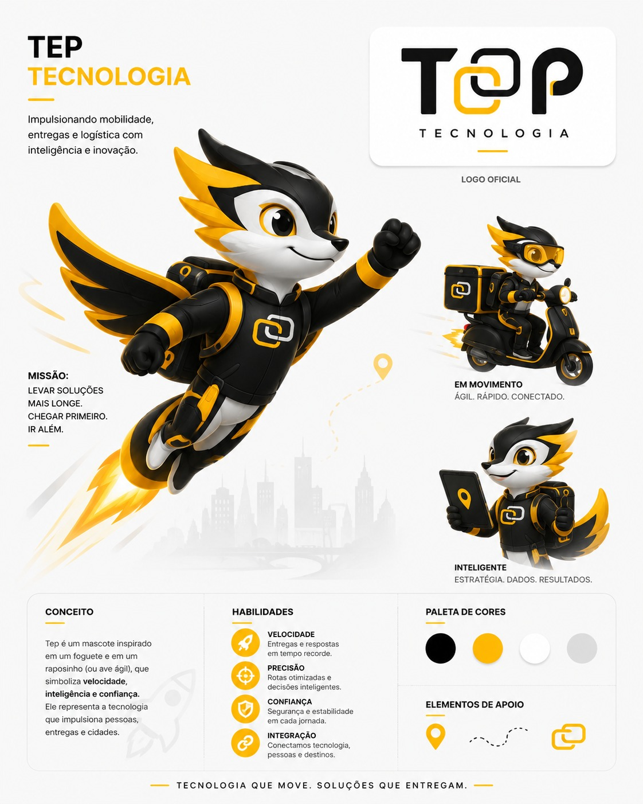

Introdução e Visão Geral (Dashboard)
A tela inicial do Monitor é o centro de comando da sua operação de mobilidade urbana. Nela, o gestor enxerga em segundos a disponibilidade da frota, a base de passageiros, o fluxo financeiro das corridas e os líderes de produtividade.
1.1. Lendo as Métricas do Topo (Categorias e Status da Frota)
Logo no topo do Dashboard, o Monitor agrupa seus condutores por Categoria de Serviço (Particular, Mulher, Mototaxista, Delivery, Executivo) e subdivide cada categoria em três indicadores vitais de saúde operacional: Ativos, Pendentes e Bloqueados. Experimente clicar nas categorias e nos cartões abaixo para entender como agir em cada cenário:
Insira aqui o print oficial dos cards superiores do seu painel Monitor mostrando as categorias (Particular, Mulher, Mototaxista, etc.). Você pode carregar a imagem abaixo para visualizar agora mesmo:
1.2. Interpretando a Seção "Clientes" (Passageiros)
Abaixo dos indicadores de motoristas, o painel apresenta o termômetro da demanda: a base de Clientes (Passageiros PF e Empresas PJ). Entenda o significado de cada métrica:
Soma histórica de todas as contas de passageiros criadas no aplicativo desde o lançamento da operação.
Passageiros com cadastro validado e liberados para solicitar corridas e entregas imediatamente.
Usuários que iniciaram o cadastro mas ainda não concluíram a validação de SMS/e-mail ou aprovação corporativa.
Contas suspensas manualmente pelo gestor por fraude, inadimplência, mau comportamento ou solicitação de exclusão.
1.3. Movimentação de Viagens e Rankings (Top Motoristas e Clientes)
Na metade inferior do Dashboard, o gestor analisa a conversão real de corridas e identifica quem são os maiores geradores de receita da plataforma:
Divide o volume de corridas por Meio de Pagamento (PIX, Cartão de Crédito no App, Dinheiro, Voucher Corporativo) e por Status Final:
- Concluídas: Viagens finalizadas com sucesso e contabilizadas no faturamento.
- Em Andamento: Corridas aceitas ou em deslocamento neste exato momento.
- Canceladas (Passageiro vs. Motorista): Se a taxa de cancelamento ultrapassar 12%, verifique se faltam motoristas próximos ou se o tempo de espera está alto.
Lista automaticamente os condutores com maior número de viagens concluídas e os passageiros mais frequentes do período selecionado:
- Top Motoristas: Ideal para criar campanhas de incentivo (ex: redução de taxa ou bônus semanal para o Top 10).
- Top Clientes: Permite premiar passageiros VIP com cupons de desconto e monitorar contas corporativas de alto volume.
Rotina Matinal Recomendada pelo Tep
Todo dia às 08h00, confira no Dashboard: 1) Fila de Motoristas Pendentes (meta: zerar até as 10h), 2) Taxa de Cancelamento do dia anterior e 3) Top 5 Motoristas da semana para manter o engajamento da frota em alta velocidade!
Gestão de Usuários: Clientes e Motoristas
Aprenda a operar os menus Clientes e Motoristas com segurança jurídica e agilidade operacional: desde a gestão de passageiros PF/PJ e solicitações de exclusão até a auditoria documental para liberação de novos condutores.
2.1. Menu Clientes: Aprovar, Bloquear e Gerenciar Passageiros
No menu lateral Clientes, o sistema subdivide a gestão em três submenus estratégicos (conforme a estrutura do Monitor):
Visualize nome, CPF, telefone, e-mail, nota média e histórico de viagens. Use os botões de ação rápida para Editar dados, Redefinir senha ou Bloquear/Desbloquear acesso.
Gerencie empresas conveniadas que utilizam vouchers corporativos para transporte de colaboradores, definindo limites de crédito, centros de custo e faturamento mensal.
Painel dedicado às solicitações de encerramento de conta enviadas pelo app. Verifique se não há pendências financeiras antes de confirmar a exclusão definitiva (conformidade LGPD).
Adicione aqui a captura da listagem de clientes do Monitor destacando a barra de busca e os botões de ação (Editar, Bloquear, Histórico).
2.2. Menu Motoristas: Análise de Documentação e Liberação de Frota
A qualidade e a segurança da sua plataforma começam na aprovação rigorosa dos motoristas. Siga o fluxo passo a passo abaixo e utilize o Simulador de Homologação Documental para treinar sua equipe:
Acesse a Fila de Cadastros Pendentes
No menu lateral, clique em Motoristas > Pendentes (ou clique diretamente no card amarelo Pendentes do Dashboard).
Inspecione os Documentos e Fotos Enviadas
Abra a ficha do condutor e confira a legibilidade da CNH com observação EAR (Exerce Atividade Remunerada), CRLV atualizado do veículo, Certidão de Antecedentes Criminais, foto de perfil sem óculos escuros/boné e fotos externas do veículo.
Vincule a Categoria Correta e Aprove (ou Reprove com Motivo)
Marque as categorias em que o veículo se enquadra (ex: Particular, Mulher, Mototaxista) e clique em Aprovar Motorista. Caso algum documento esteja ilegível ou vencido, clique em Reprovar / Solicitar Reenvio informando o motivo claro para que o motorista receba notificação no app.
Operação e Viagens: Mapa ao Vivo, Delivery e Grupos
Domine o acompanhamento geolocalizado da frota no menu Monitoramento, a auditoria de rotas em Viagens e Delivery e a inteligência de distribuição por Grupos de Chamados.

3.1. Monitoramento: Acompanhando Motoristas e Corridas no Mapa
Ao acessar Monitoramento no menu lateral, o gestor visualiza o mapa interativo da cidade atualizado via GPS em tempo real. Cada pino colorido representa o estado operacional imediato do condutor:
Insira aqui o print da tela "Monitoramento" mostrando os veículos distribuídos no mapa da sua região.
3.2. Viagens e Delivery: Solicitações, Rotas e Histórico
No menu Viagens, você audita tanto corridas de passageiros quanto entregas de pacotes (Delivery). Veja tudo o que pode ser gerenciado na ficha detalhada de uma viagem:
Visualize o endereço de origem, paradas intermediárias, destino final, distância estimada vs. percorrida e o traçado exato no mapa com horários de embarque e desembarque.
Nas corridas de entrega, confira o nome do destinatário, código de segurança de recebimento, observações de coleta e comprovante de entrega registrado pelo motoboy.
Caso um motorista tenha problemas técnicos durante a corrida (bateria arriou ou pneu furou), o gestor pode Finalizar Viagem Manualmente ou Cancelar sem Cobrança de Taxa.
3.3. Grupos de Chamados: Organizando a Distribuição de Corridas
Os Grupos de Chamados permitem organizar como o algoritmo distribui as solicitações para os motoristas. Você pode criar grupos prioritários por região, cooperativa, ponto de apoio ou desempenho:
Criação do Grupo e Definição de Raio (KM)
Defina o nome do grupo (ex: Grupo Ouro VIP ou Ponto Rodoviária) e o raio máximo de busca em quilômetros para disparo do chamado.
Ordem de Disparo e Tempo de Toque
Configure quantos segundos o chamado toca para cada motorista (ex: 15 segundos) e se o transbordo automático passará para a frota geral caso ninguém do grupo aceite no primeiro ciclo.
Configurações de Taxas e Gestão Financeira
Aprenda a controlar o fluxo de caixa no menu Financeiro (faturamentos, extratos, recargas de crédito e repasses) e a calibrar a precificação completa em Avançadas > Configurações.

4.1. Menu Financeiro: Faturamentos, Extratos e Repasses
No menu lateral Financeiro, todas as movimentações monetárias entre passageiros, motoristas e plataforma ficam centralizadas em submódulos auditáveis:
Consulte quanto cada motorista faturou em viagens pagas no Dinheiro, PIX ou Cartão via App, bem como o saldo da carteira virtual dele na plataforma.
Quando o motorista acumula saldo positivo de corridas pagas pelo App, ele solicita o saque. Aqui o gestor confere o extrato e aprova o repasse via PIX/TED.
Gerencie pacotes de recarga pré-paga para motoristas, taxas de cancelamento retidas e o Dashboard Adquirente (conciliação de recebíveis eletrônicos).
4.2. Passo a Passo: Configurando Tarifas e Taxa do Aplicativo
Para definir quanto o passageiro paga pela corrida e qual é o percentual (ou valor fixo) retido pela plataforma, acesse o caminho Avançadas > Configurações (ou a tabela tarifária da categoria):
Navegue até o Menu Avançadas > Configurações
No menu lateral esquerdo do Monitor, role até a seção Avançadas e clique em Configurações (e na aba de Tarifas / Categorias correspondente).
Defina a Tarifa Base (Bandeirada) e a Tarifa Mínima
Insira o valor inicial fixo cobrado na abertura da corrida (Tarifa Base, ex: R$ 4,50) e o piso mínimo que uma viagem curta pode custar (Tarifa Mínima, ex: R$ 8,00).
Configure o Valor por KM e o Valor por Minuto
Preencha o Valor por KM rodado (ex: R$ 1,80/km) para remunerar o deslocamento e o Valor por Minuto (ex: R$ 0,30/min) para proteger o ganho do motorista em horários de trânsito lento.
Ajuste a Taxa do Aplicativo (Comissão da Plataforma) e Salve
Defina a Taxa Administrativa (%) (ex: 15%) ou taxa fixa por corrida que será descontada automaticamente para a plataforma. Clique em Salvar Configurações para aplicar imediatamente.
Insira aqui o print da tela Avançadas > Configurações onde aparecem os campos de Tarifa Base, Valor por KM, Valor por Minuto e Taxa do App.
Comunicação e Relatórios Gerenciais
Mantenha um canal próximo com passageiros e motoristas através dos menus Mensagens e Fale Conosco, e extraia dados estratégicos para tomada de decisão em Relatórios.
5.1. Mensagens e Fale Conosco: Suporte e Engajamento
A comunicação ágil evita cancelamentos, resolve objetos esquecidos rapidamente e aumenta a retenção da frota:
Permite enviar avisos instantâneos (Notificações Push ou alertas no mural do app) segmentados para:
- Todos os Motoristas: Avisos de alta demanda, chuvas, eventos na cidade ou campanhas de bônus.
- Todos os Passageiros: Divulgação de cupons promocionais de fim de semana.
- Usuário Específico: Mensagem individual direta para um condutor ou cliente.
Centraliza todos os chamados abertos pelos usuários dentro do aplicativo (dúvidas sobre cobrança, elogios, reclamações ou itens perdidos):
- Visualize o ID da corrida vinculada ao chamado com 1 clique.
- Responda diretamente pelo Monitor e altere o status do ticket para Em Atendimento ou Resolvido.
5.2. Relatórios: Extraindo Dados Operacionais e Financeiros
Em Financeiro > Relatórios e nos módulos operacionais, o gestor filtra dados por período, categoria, motorista, empresa PJ ou forma de pagamento e exporta planilhas prontas para contabilidade e análise de performance:
Histórico completo de chamadas atendidas, canceladas, horários de pico e bairros com maior volume de solicitações.
Consolidação do volume bruto transacionado (GMV), total de comissões retidas pela plataforma e repasses líquidos efetuados.
Extrato detalhado por centro de custo e funcionário para emissão de fatura e boleto mensal às empresas clientes.
Adicione aqui o print da tela de Relatórios ou Fale Conosco do painel Monitor.
Configurações Avançadas e Perfil do Sistema
Configure cercas virtuais, mapas, Zonas de Risco e regras de negócio no menu Avançadas, além de gerenciar as ferramentas de administrador (Alterar Senha, Limpar Cache e Notificações).
6.1. Menu "Avançadas": Mapas, Zonas de Risco e Regras de Negócio
O menu Avançadas reúne os parâmetros estratégicos que moldam o comportamento do aplicativo na sua cidade:
Desenhe os polígonos no mapa que delimitam as cidades e bairros onde o aplicativo aceita chamados, além de configurar chaves de API de rota e geocodificação.
Demarque áreas sensíveis no mapa para exibir um alerta visual de segurança ao motorista antes de aceitar a corrida ou restringir chamadas noturnas naquele perímetro.
Configure limite de saldo negativo para bloqueio automático de inadimplentes, tempo máximo para cancelamento gratuito, tarifa dinâmica por alta demanda e tolerância de espera.
6.2. Perfil de Administrador: Senha, Limpar Cache e Notificações
No canto superior direito do painel Monitor (ícone do perfil do administrador), você encontra três utilitários indispensáveis para a segurança e atualização imediata do sistema:
Alterar Senha de Administrador
Recomendamos atualizar a senha master a cada 60 dias e utilizar perfis individuais para cada operador de suporte, garantindo rastreabilidade no log de auditoria.
Limpar Cache do Sistema (Quando Utilizar?)
Sempre que você alterar tarifas, cadastrar uma nova categoria, atualizar uma Zona de Risco ou mudar parâmetros em Avançadas > Configurações, clique em Limpar Cache para que os aplicativos dos motoristas e passageiros recebam as novas regras instantaneamente.
Central de Notificações do Gestor
Ative os alertas sonoros e visuais do navegador para ser avisado imediatamente quando surgir um novo motorista pendente de aprovação, uma solicitação de transferência ou um chamado urgente de suporte.
Insira aqui o print mostrando o menu de Zonas de Risco ou o menu suspenso do Administrador (Alterar Senha / Limpar Cache).
6.3. Identidade Visual Oficial: TOP Tecnologia & Mascote Tep
A plataforma Monitor faz parte do ecossistema TOP Tecnologia — "Tecnologia que move. Soluções que entregam." Conheça as versões oficiais do nosso mascote Tep (inspirado na velocidade de um foguete e na agilidade de um raposinho/ave conectada) que acompanham o gestor em toda a jornada:
Prancha Oficial de Conceito & Identidade Visual — TOP Tecnologia
